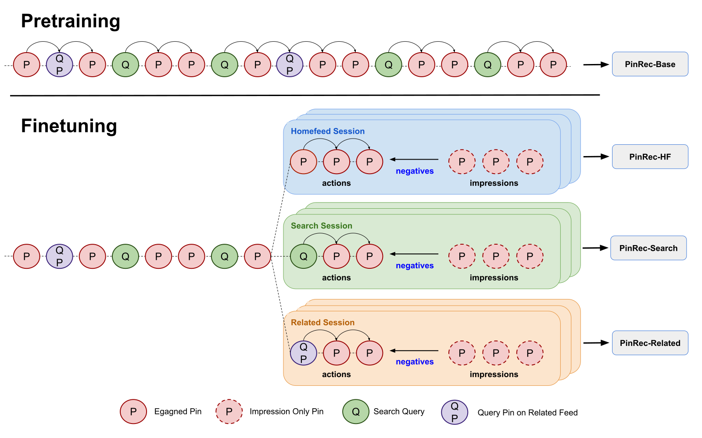
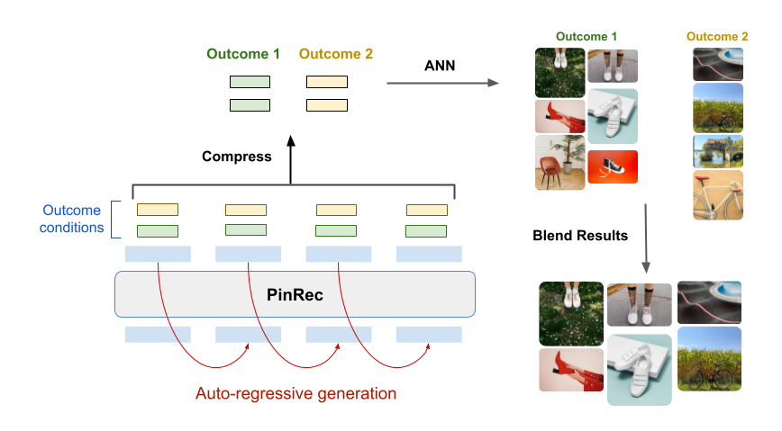

目录 · 11 节
1一个用户，三个场景2整体流程3输入：把 Pin、搜索词和时间拼成一条序列4按目标行为生成：同一段历史，换个条件出不同候选5场景微调：曝光未互动的 Pin 当负样本6多步生成和去重7上线开销8实验结果9我认为它的局限10一个推荐团队可以怎么试11一句话结论推荐系统里，首页、搜索和相关推荐通常各有各的召回模型，因为三处要的东西不一样：首页看用户会不会保存，搜索看用户会不会点出去买东西，相关推荐看用户会不会继续往下逛。Pinterest 这篇 KDD 2026 论文把三处换成同一个生成式召回模型 PinRec：先在全站行为上预训练，再分别用各场景的曝光日志微调，生成时还会告诉模型“这次要找用户会保存的”还是“会点出去的”。真正起作用的是这个按目标行为生成的条件，统一模型本身带来的收益要小得多：去掉条件，三个场景的离线召回掉 7.5% 到 12.6%；去掉场景微调，只掉 2% 到 4.5%。线上作为一路召回接进搜索，保存数涨了 3.88%。
这是一篇少见的、把生成式召回真正铺到多个场景并把上线细节讲透的工业论文，值得做召回的团队细读。理由有两条：第一，它的核心收益来自“按目标行为生成”这个很便宜的改动，一个可学习的条件向量就能让同一段历史产出不同用途的候选；第二，它给出了延迟、显存和服务架构的具体数字，能直接拿来估算成本。但它和基线的对比方式偏向自己，模型放大也没有带来收益，读的时候要分清哪些结论可以搬、哪些只是 Pinterest 的特例。
一个用户，三个场景
先看一个例子（示意）。某用户最近在搜“露营装备”，保存了两顶帐篷，又点开一张户外咖啡壶的图看相关推荐：
| 场景（示意） | 用户眼前的东西 | 这里最想要的行为 | 理想的召回 |
|---|---|---|---|
| 首页 | 没有明确输入 | 保存 | 露营灵感图、营地布置 |
| 搜索 | 搜索词“露营装备” | 点出站去买 | 能下单的帐篷、睡袋商品 |
| 相关推荐 | 那张咖啡壶图 | 继续往下逛 | 户外炊具、野餐场景 |
同一个人、同一段历史，三处要的候选完全不同。传统做法是每个场景训练一个双塔召回模型，各自有 query 塔、目标和索引，维护成本高，场景之间的数据也很难互相借力。PinRec 想用一个模型覆盖三处，同时又不丢掉各场景的目标差异。
整体流程

| 阶段 | 做什么 | 产出 |
|---|---|---|
| 预训练 | 在全站的长期行为序列上做下一个行为预测 | 一个基座模型 |
| 场景微调 | 用每个场景的会话日志继续训练，曝光未互动的 Pin 当难负样本 | 首页、搜索、相关推荐三个版本 |
| 按条件生成 | 推理时给定目标行为（保存、点出站等），自回归地一步步生成多个 embedding | 一组候选 embedding |
| 合并与检索 | 太相似的 embedding 合并，按预算分配名额，用 ANN 在 Pin 索引里找最近邻 | 交给排序的候选 Pin |
模型本体是一个约 1 亿参数的 12 层 Transformer，和 GPT-2 最小号差不多大。它输出的是连续的 embedding，再拿去最近邻检索，而不是像 TIGER（一种用 Semantic ID 逐位生成物品编号的生成式召回）那样直接生成物品编号。论文给的理由很实在：在 Pinterest 的规模下，Semantic ID 会出现几万个物品挤在同一个编号上的情况，效果明显更差；生成 embedding 再检索，也天然不会生成一个不存在的物品。
输入：把 Pin、搜索词和时间拼成一条序列
序列里每个元素是一次行为：用户对哪个东西、在哪个场景、什么时候、做了什么。Pin 用 Pinterest 已有的内容 embedding（OmniSage，融合了图片、文字和 Pin 与图板的关系）过两三层全连接；搜索词用已有的 query embedding 走同样的处理。时间编码分两部分：绝对时间用按天、按周、按季节的正余弦周期，相对时间（距离上一次行为多久）用对数尺度。最后再加上场景 embedding，标明这次行为发生在首页、搜索还是相关推荐。
这样设计有一个直接好处：新 Pin、新广告、新搜索词只要有内容特征就能进模型，不需要先攒够交互。论文后面的零样本实验就是靠这一点。
按目标行为生成：同一段历史，换个条件出不同候选
这是全文最关键的部件。普通生成式召回只学“下一个会互动的是什么”，不区分是点击还是保存。PinRec 在输出层加了条件：每种目标行为、每个场景都有一个可学习的向量，和序列的最后一个隐状态一起送进输出层，得到“这个用户在这个条件下的下一个 Pin”的 embedding。
训练时，条件就填目标那一条真实发生的行为。比如序列下一步是用户保存了一顶帐篷，就把“保存”的条件向量送进去，让输出去对齐这顶帐篷。推理时反过来，想要什么行为就填什么条件。回到露营的例子：同一段历史，填“保存”可能召回营地布置的灵感图，填“点出站”则更偏向能下单的帐篷商品。
打个比方：同一个导购记住了你的全部购物记录，你问“有什么值得收藏的”和“有什么现在就能买的”，他会给出两份不同的清单。条件向量就是这句问话。
损失是常见的 sampled softmax：让输出和目标 Pin 的相似度，高于和一批负样本的相似度。负样本一部分来自同一批次里其他用户的目标。热门 Pin 在批次里出现得多，会被过度当成负例，所以算相似度时要减去一个按出现频率估出的修正项；频率用 count-min sketch 来估，这是一种只用很少内存就能近似统计海量 Pin 各自出现次数的计数结构。
场景微调：曝光未互动的 Pin 当负样本
预训练只用用户有行为的记录，不含曝光。微调时，取用户在某个场景的一次会话，把会话之前的完整历史和会话里有行为的 Pin 拼起来，继续做下一个行为预测；会话里只曝光、没互动的 Pin 加进负样本。
为什么不把曝光当正样本？论文专门试了，搜索场景召回掉 6.8%，相关推荐掉 3.0%。原因不难理解：曝光只说明系统推过它，不说明用户想要它，当正样本等于奖励“被推过”，而不是奖励“被需要”。
多步生成和去重

生成是一步接一步进行的：每一步模型对所有目标行为各出一个 embedding；再从这几个里随机抽一个，当作“用户下一步看了这个”接回序列末尾，模型再接着生成下一步，并把时间往后挪一小段（论文用 10 秒）。这样后面的步骤能沿着“用户接下来可能会怎么逛”往前推，而不是反复预测同一个下一步。
多步生成会产出很多相近的 embedding，直接检索会拿回大量重复的 Pin。所以检索前分两步处理。先分名额：总共要召回 N 个 Pin，按预算比例分给各个目标行为，同一行为在各步生成的 embedding 再平分这份名额，比如首页可以给“保存”七成、给“点出站”三成（示意）。再做合并：按生成顺序，如果一个新 embedding 和前面某个保留下来的 embedding 余弦相似度超过阈值（线上调过 0.75 到 0.9，0.9 在搜索和相关推荐上略好），就并进前面那个，检索时只用前面那个，名额相加。这样相近的方向只查一次索引，但拿回的数量不变。
上线开销
模型跑在 NVIDIA L40S 上，用 Triton 推理服务，开了 CUDA Graphs 和 KV cache（缓存已处理过的序列，后续步骤只算新增部分）。最近邻检索在 CPU 上跑 Faiss 索引。按目标生成的版本在每秒 80 次请求下，延迟中位数 40ms，九成请求在 65ms 内，大约是双塔召回的 3 到 4 倍；因为和其他召回并行，整条链路的延迟只多不到 1%。显存约 1.6GiB，其中模型本身约 250MiB，和原来的双塔差不多。
这组数字的意义在于：生成式召回的主要代价是延迟，而不是显存，只要它不在关键路径上串行，线上是扛得住的。
实验结果
离线评估用的是“无序召回”：模型一次生成多个 embedding，只要其中任意一个能在 100 万个随机 Pin 里把目标排进前 10，就算命中。所有模型都只用预训练方式训练、不做微调：
| 模型 | 首页 | 相关推荐 | 搜索 |
|---|---|---|---|
| SASRec | 0.382 | 0.426 | 0.142 |
| PinnerFormer（Pinterest 之前的用户序列模型） | 0.461 | 0.412 | 0.257 |
| TIGER | 0.208 | 0.230 | 0.090 |
| HSTU | 0.596 | 0.539 | 0.179 |
| PinRec，不加条件 | 0.608 | 0.521 | 0.350 |
| PinRec，按目标生成 | 0.625 | 0.537 | 0.352 |
TIGER 垫底，印证了 Semantic ID 在这个规模下的编号冲突问题；HSTU 在首页和相关推荐上接近 PinRec，但搜索只有一半。
更有信息量的是消融（相对最佳配置的变化）：
| 去掉的部件 | 首页 | 相关推荐 | 搜索 |
|---|---|---|---|
| 按目标生成 | −12.6% | −7.5% | −11.9% |
| 场景微调 | −4.5% | −2.0% | −2.5% |
| 曝光负样本 | −0.4% | +0.1% | 0.0% |
按目标生成的贡献是微调的两到五倍，曝光负样本几乎没用。这说明在多场景召回里，“告诉模型要什么行为”比“为每个场景单独适配”更值钱。在越稀有的行为上，条件的效果越明显：搜索里点出站买商品这个行为，单独评估召回提升 16%。
多步生成的收益也很大。相对只生成一步，生成 16 步时相关推荐的召回提升 71.4%，首页 8.8%，搜索 11.1%。相关推荐收益最大，符合直觉：用户在相关推荐里本来就是一路点下去的，兴趣会随着浏览漂移。
线上 A/B 里，PinRec 作为一路召回接入，后面的排序不变。首页按目标生成的版本让首页的网格点击涨 4.01%（不加条件的版本只有 1.87%），有行为的会话涨 0.21%；搜索的保存数涨 3.88%、分享涨 5.30%；相关推荐让停留时长涨 0.38%，而且没动搜索，搜索里至少有一次保存、长点击等正向行为的会话也多了 0.42%，说明相关推荐推得好会把用户带去搜索。拿用户的输出 embedding 直接去广告库检索、不做任何广告训练，广告的单次转化成本还降了 1.83%。
我认为它的局限
第一，和基线的比较方式对自己有利。离线表里所有模型都用 PinRec 的预训练流程训练，HSTU 没用它原本的采样和排序设计，搜索上只有 0.179，很难说是 HSTU 的真实水平。而且无序召回只要多个向量里有一个命中就算，PinRec 一次生成多个 embedding；如果基线只出一个向量，0.625 和 0.461 的差距里就有一部分来自“多射几箭”。
第二，模型放大没有用。参数从 1 亿放大到 GPT-2 中号、大号，召回反而略降 0.8% 和 0.9%；放到约 10 亿参数的 XL（GPT-2 最大的一档）才涨 2.2%，又因为太贵上不了线。这和“推荐模型也有扩展定律”的说法不太一致，说明收益主要来自条件和训练数据的设计，而不是模型容量。
第三，线上提升的绝对幅度不大，而且是叠加在一堆已有召回之上的。首页有行为的会话只涨 0.21%。延迟是双塔的 3 到 4 倍、需要 GPU，对没有并行召回架构、或者召回在关键路径上串行的系统，这笔账要重新算。
一个推荐团队可以怎么试
- 先在现有的序列召回模型上加条件向量，这是最便宜的一步：训练时把目标行为类型（点击、收藏、购买）作为一个可学习的向量送进输出层，推理时按业务目标填。先离线比较各行为单独评估的召回，看稀有行为上有没有明显提升。
- 如果有多个场景，再试“全站预训练加场景微调”，并把曝光未互动的物品当负样本。不要把曝光当正样本，论文里这会明显拉低召回。
- 有余力再做多步生成，配套做 embedding 合并和名额分配，否则召回会大量重复。先从 4 步试起，相关推荐这类连续浏览场景收益最大。
- 上线前测清延迟：按目标生成的版本中位延迟约 40ms，确保它和其他召回并行，而不是串在关键路径上。
一句话结论
多场景生成式召回最值钱的不是统一模型，而是一个按目标行为生成的条件：同一段历史，换个条件就能产出不同用途的候选。
| 维度 | 评价 |
|---|---|
| 问题重要性 | 高。多场景、多目标召回是大平台的普遍难题 |
| 方法创新性 | 中。条件生成和预训练加微调都不新，新在把它们组合起来并在三个场景同时上线 |
| 实验证据 | 中高。有消融、线上 A/B 和零样本实验，但离线基线的训练方式偏向自己 |
| 工程成本 | 中高。需要 GPU 推理和自回归服务，延迟是双塔的 3 到 4 倍 |
| 是否值得尝试 | 值得。条件向量可以先在现有序列召回上低成本验证 |
讨论
欢迎补充实验细节、复现经验或不同看法。需 GitHub 登录。
正在加载讨论…